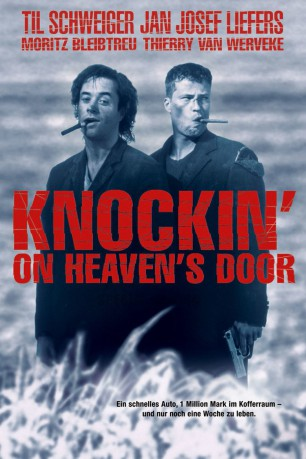

#6319 Knockin' on Heaven's Door
 
 IMDB-Wertung: 8.0 / 10
IMDB-Wertung: 8.0 / 10  Metascore: 0
Metascore: 0 
Martin und Rudi treffen in einer Klinik zusammen. Beider Diagnose: baldiger Tod durch Gehirntumor bzw. Knochenkrebs. Die gegensätzlichen Typen entschließen sich ans Meer zu fahren, weil Rudi da noch nie gewesen ist. Und weil im Himmel immer nur vom Meer geredet wird, stehlen sie ein schnelles Auto und machen sich auf den Weg. Leider handelt es sich dabei um den Wagen von Henk und Abdul, zwei nicht allzu gelungenen Gangstern, und im Kofferraum liegt eine Million, die dem Boß der beiden gehört. Martin und Rudi kennen kein Pardon und lassen sich auch von der Polizei nicht aufhalten, der sie erfolgreich vorspielen, Entführer und Geisel zu sein. So kommt es zu einer turbulenten und bleihaltigen Reise in Richtung Meer, verfolgt von Obrigkeit und Gangstern, sowie von den eigenen Gebrechen, die ihnen die Zeit stehlen.
Jahr: 1997
Dauer: 88 Minuten
FSK: 12
Land: Deutschland Studio: Buena Vista InternationalTonspuren: DD5.1 - ,
Untertitel: Englisch,
Auflösung: 1080p (1920x816) Größe: 6000 MB
Genre: Action, Drama, Komödie, Krimi
Regisseur: Thomas Jahn
Drehbuch: Hiroshi Mori
Soundtrack:
Darsteller:
 Til Schweiger als Martin Brest
Til Schweiger als Martin Brest Jan Josef Liefers als Rudi Wurlitzer
Jan Josef Liefers als Rudi Wurlitzer Moritz Bleibtreu als Abdul - der Araber
Moritz Bleibtreu als Abdul - der Araber- Huub Stapel als Frankie 'Boy' Beluga
- Leonard Lansink als Kommissar Schneider
 Ralph Herforth als Assistent Keller
Ralph Herforth als Assistent Keller Cornelia Froboess als Frau Brest - Martins Mutter
Cornelia Froboess als Frau Brest - Martins Mutter Rutger Hauer als Curtiz
Rutger Hauer als Curtiz Christiane Paul als Verkäuferin Boutique
Christiane Paul als Verkäuferin Boutique Hannes Jaenicke als Motorrad-Polizist
Hannes Jaenicke als Motorrad-Polizist Corinna Harfouch als Schwester Labor B
Corinna Harfouch als Schwester Labor B- Florian Fitz als Polizist im Hotel
- Xenia Seeberg als Polizistin im Hotel
- Markus Knüfken als 1. Zivilpolizist
 Tyron Ricketts als 2. Zivilpolizist
Tyron Ricketts als 2. Zivilpolizist- Dana Schweiger als Junge Frau am Bahnhof
- Clelia Sarto als TV-Reporterin
- Sönke Wortmann als Regisseur
- Thomas Jahn als Taxifahrer
- Bernd Eichinger als Typ mit Geld
- Thierry van Werveke als Henk - der Belgier
- Willi Thomczyk als Autoverkäufer
- Vladimir Weigl als Harald Rohwitz
- Jenny Elvers als Schwester Labor A
- Tobias Schenke als Junge
- Hark Bohm als Polizeipsychologe
- Jürgen Becker als Tankwart
- Wolfgang Kaven als Dr. Graf
- Bernd Hoffmann als Dr. Wortmann
- Muriel Baumeister als Schwester Ambulanz
- Helen Duval als Puffmutter
- Christoph Ott als Polizist am Fahrstuhl
- Henry Lupprian als Hotel-Boy
- Georg Roth als Hotelmanager
- Sascha Kentsch als 3. Zivilpolizist
- Ralf Hempel als 4. Zivilpolizist
- Valentin Schweiger als Baby im Bahnhof
- Mick Schweiger als 1. Rodriguez Bruder
- Salvatore Pascale als 2. Rodriguez Bruder
- Evangelos Pananos als 3. Rodriguez Bruder
- Gustav Adolph als Carlos
- Anton Rattinger als Polizist im Auto
- Ayhan Vanelli als Türke im Imbiss
- Ludwig Boettger als Apotheker
- Eva Mannschott als Bankangestellte
- Nicholas Bodeux als Bankangestellter
- Lauren Stark als Kleines Mädchen
- Brunhilde Wiersbitzky-Wester als Frau in Apotheke
- Ursula Schreiber als Frau mit Capri
- Lionel John Dent als Notarzt
Datei: X:\1997\Knockin' on Heaven's Door (1997, FSK12, 1920x816).mkv seit 08.06.2017
Festplatte: HD 1996-2002
 Es gibt insgesamt 83 Filme in der Gruppe '1997'
Es gibt insgesamt 83 Filme in der Gruppe '1997'